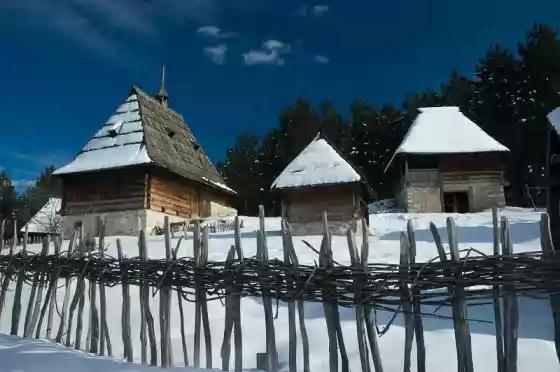

SRBIJA

Sirogojno se nalazi u jugozapadnoj Srbiji, na planini Zlatibor i na 20 kilometara od Užica. Celo selo je 1980. godine postalo muzej i dobilo naziv
"Staro selo". Na prostoru od 5 hektara prikazan je način života ljudi ovih planinskih predela. Arhitektura Sirogojna sastoji se od 47 drvenih objekata,
prenetih iz okolnih zlatiborskih sela i opremljenih autentičnim pokućstvom, oruđima i alatima. Svako domaćinsto ima mlekar, ambar, koš-salaš za kukuruz,
po jedno hlebnu peć, kačaru sa kazanom za pečenje rakije, pčelinjak i sušionicu za šljive, dok su staje za stoku sagrađene izdvojeno od osnovnog
dvorišta.
Pod krovovima i na travnjacima ovog etno sela izloženo je oko 2000 eksponata koje godišnje vidi preko 100.000 ljudi. Svim posetiocima na raspolaganju
je apartmanski smeštaj u kućama brvnarama kao i prodavnica suvenira sa krčmom.
Kao posebna atrakcija izdvaja se letnji stočarski stan, gde čobani leti čuvaju stoku. Ovaj stan se sastoji od dve kolibe i pokretne kućice sa krevetom
na saonicama, kako bi čobanin i zimi mogao da bude pored svog stada.
Ovaj prelepi muzejski prostor krase i seoska crkva brvnara posvećena Sv. Petru i Pavlu (1821. godina), kao i staro seosko groblje.
U nameri da ceo ambijent bude verodostojniji i da mu se udahne život, na prostoru muzeja organizuju se radionice za izradu starih predmeta od drveta,
metala i gline, a u skladu sa hrišćanskim kalendarom u muzeju se obeležavaju Badnje veče, Božić, Uskrs i ostali tradicionalni praznici. Kroz oživljene
običaje, u Sirogojnu se može primetiti veliko duhovno bogatstvo ljudi sa ovih prostora, prožeto kako hrišćanskim, tako i paganskim elementima.
U selu se u toku godine organizuju brojne izložbe, na primer, izložba tradicionalne odeće, kao i škole farbanja uskršnjih jaja, ili proizvodnje ručne
trikotaže. Ipak, Sirogojno je postalo svetski poznato sedamdesetih godina 20. veka i to po proizvodnji rukom rađenih džempera. Od tada, “Moda Sirogojno”
proširila se na Pariz, Rim, London, Beč, pa čak i na daleki istok. Selo obeležava Dan muzeja i muzejske slave Ognjene Marije, ali i poznatu
manifestaciju Noć muzeja. U toku leta u selu se emituje revija ekološkog filma.
Sirogojno je okruženo očaravajućim planinskim ambijentom, idealnim kako za zimske, tako i letnje odmore. U blizini, nalaze se selo Gostilje, Stopića
pećina, banja Vapa sa izvorima lekovite vode, kao i turistički centar Zlatibor.